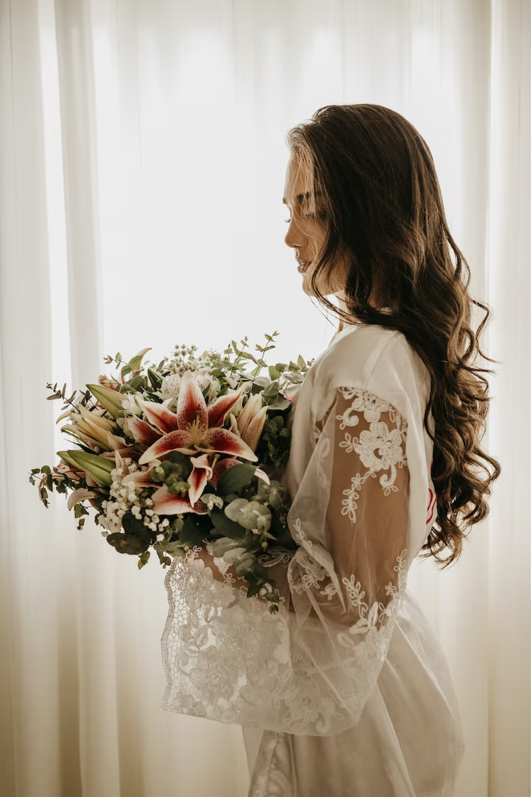
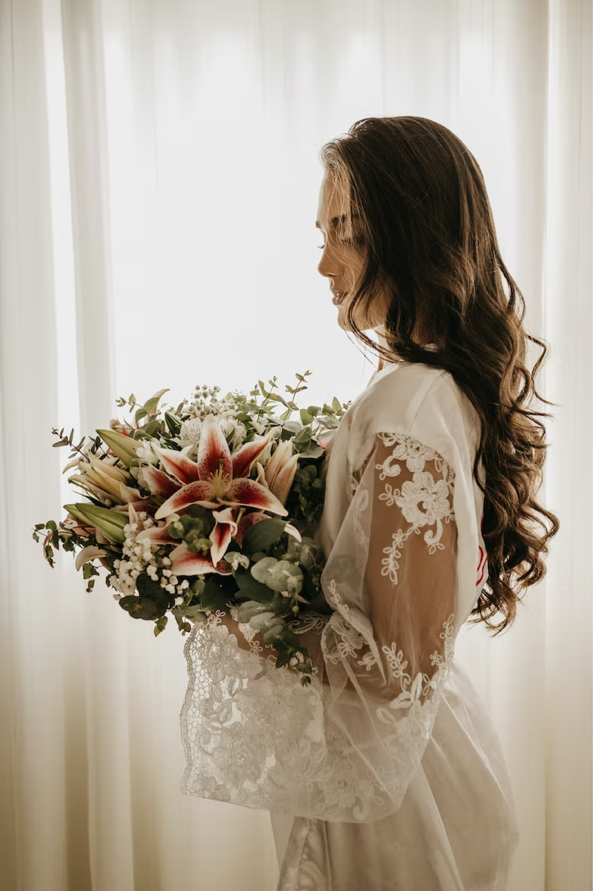

Welcome
We are alwavs told that a nicture is worth a thousand beller tat pictures are not only a look into the past, but BASED IN REXBURG. ID & AVAILABLE FOR TRAVEL
We are alwavs told that a nicture is worth a thousand beller tat pictures are not only a look into the past, but BASED IN REXBURG. ID & AVAILABLE FOR TRAVEL

 



I am from Mongolia. and I am 23 vears old. I am a student at BYU-Idaho maiorina in Web Desian anc Development. I've married the love of my life 5 months ago. My absolute two favorite things to do in mv free time are cooking at home and exploring nature like campina. hikina. kavakina. etc. I have a personal belief that pictures are not onlv a look into the past. but are doors that lead our hearts into a nostalaic iournev to our most cherished memories. More than anvthina. I am fullv committed to capturina moments that aive vou iov and out a smile on vour face.

My goal is to ensure that vour pictures not onlv look amazing but also that you have an enjoyable experience durina the photo shoot as well. I alwavs ensure that the time vou soent is never wasted and that vour photos are of the utmost highest qualitv that is available todav. View mv Portfolio